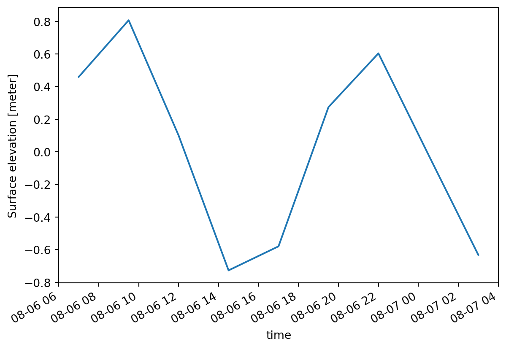
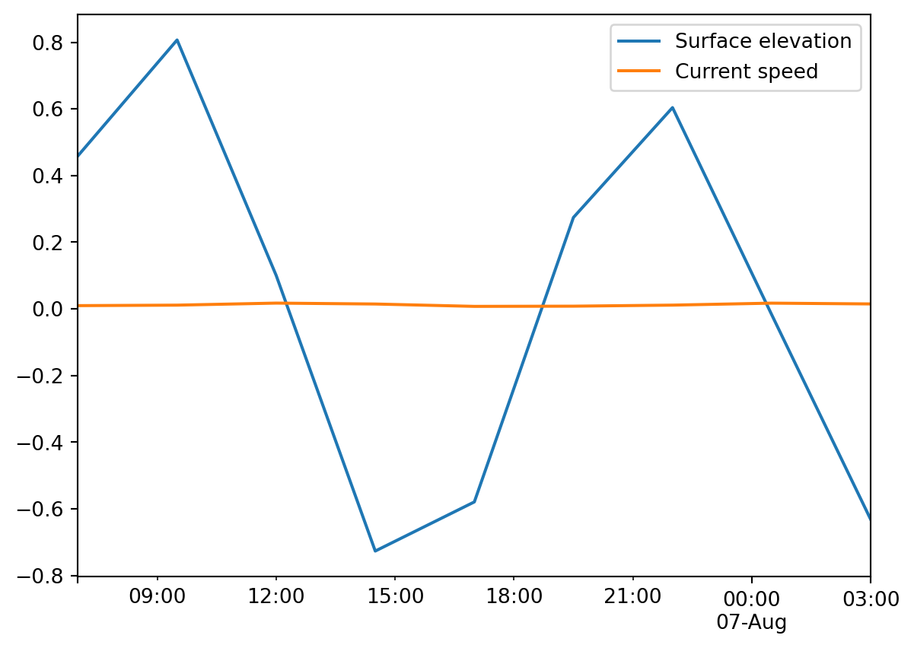

import mikeioDfsu - Read
filename = "../tests/testdata/HD2D.dfsu"
ds = mikeio.read(filename)
ds<mikeio.Dataset>
dims: (time:9, element:884)
time: 1985-08-06 07:00:00 - 1985-08-07 03:00:00 (9 records)
geometry: Dfsu2D (884 elements, 529 nodes)
items:
0: Surface elevation <Surface Elevation> (meter)
1: U velocity <u velocity component> (meter per sec)
2: V velocity <v velocity component> (meter per sec)
3: Current speed <Current Speed> (meter per sec)# to read specific variables
ds = mikeio.read(filename, items=["Surface elevation","Current speed"])
ds<mikeio.Dataset>
dims: (time:9, element:884)
time: 1985-08-06 07:00:00 - 1985-08-07 03:00:00 (9 records)
geometry: Dfsu2D (884 elements, 529 nodes)
items:
0: Surface elevation <Surface Elevation> (meter)
1: Current speed <Current Speed> (meter per sec)ds.describe()| Surface elevation | Current speed | |
|---|---|---|
| count | 7956.000000 | 7956.000000 |
| mean | 0.034152 | 0.073658 |
| std | 0.534890 | 0.119606 |
| min | -0.758378 | 0.000082 |
| 25% | -0.579662 | 0.029917 |
| 50% | 0.101636 | 0.046848 |
| 75% | 0.462013 | 0.070259 |
| max | 1.172707 | 1.714988 |
Filter in space to the element at our POI, (discrete values, no interpolation)
ds.sel(x=606200, y=6905480)<mikeio.Dataset>
dims: (time:9)
time: 1985-08-06 07:00:00 - 1985-08-07 03:00:00 (9 records)
geometry: GeometryPoint2D(x=606202.7806372638, y=6905474.639383219)
items:
0: Surface elevation <Surface Elevation> (meter)
1: Current speed <Current Speed> (meter per sec)Interpolate in space to the location of our POI
ds.interp(x=606200, y=6905480)<mikeio.Dataset>
dims: (time:9)
time: 1985-08-06 07:00:00 - 1985-08-07 03:00:00 (9 records)
geometry: GeometryPoint2D(x=606200, y=6905480)
items:
0: Surface elevation <Surface Elevation> (meter)
1: Current speed <Current Speed> (meter per sec)ds.interp(x=606200, y=6905480).Surface_elevation.plot();
Convert to a dataframe.
df = ds.sel(x=606200, y=6905480).to_dataframe()
df.head()| Surface elevation | Current speed | |
|---|---|---|
| 1985-08-06 07:00:00 | 0.459460 | 0.009572 |
| 1985-08-06 09:30:00 | 0.806965 | 0.011064 |
| 1985-08-06 12:00:00 | 0.100285 | 0.017169 |
| 1985-08-06 14:30:00 | -0.727009 | 0.014452 |
| 1985-08-06 17:00:00 | -0.579541 | 0.007349 |
df.plot();
Other ways to subset data
Assume that we interested in these 3 points only
pt1 = (606200, 6905480)
pt2 = (606300, 6905410)
pt3 = (606400, 6905520)
pts_x = [pt1[0], pt2[0], pt3[0]]
pts_y = [pt1[1], pt2[1], pt3[1]]
elem_ids = ds.geometry.find_index(pts_x, pts_y)We can use these element ids either when we select the data from the complete dataset using the method isel() as shown above or already when we read the data from file (particular useful for files larger than memory)
ds_pts = mikeio.read(filename, elements=elem_ids)
ds_pts<mikeio.Dataset>
dims: (time:9, element:3)
time: 1985-08-06 07:00:00 - 1985-08-07 03:00:00 (9 records)
geometry: Dfsu2D (3 elements, 7 nodes)
items:
0: Surface elevation <Surface Elevation> (meter)
1: U velocity <u velocity component> (meter per sec)
2: V velocity <v velocity component> (meter per sec)
3: Current speed <Current Speed> (meter per sec)Create a new dfsu file
- Subset of items
- Renamed variables
First inspect the source file:
ds = mikeio.read("../tests/testdata/HD2D.dfsu")
ds<mikeio.Dataset>
dims: (time:9, element:884)
time: 1985-08-06 07:00:00 - 1985-08-07 03:00:00 (9 records)
geometry: Dfsu2D (884 elements, 529 nodes)
items:
0: Surface elevation <Surface Elevation> (meter)
1: U velocity <u velocity component> (meter per sec)
2: V velocity <v velocity component> (meter per sec)
3: Current speed <Current Speed> (meter per sec)outfilename2 = "HD2D_selected.dfsu"
newds = ds[["U velocity", "V velocity"]].rename({'U velocity': 'eastward_sea_water_velocity',
'V velocity': 'northward_sea_water_velocity'})
newds<mikeio.Dataset>
dims: (time:9, element:884)
time: 1985-08-06 07:00:00 - 1985-08-07 03:00:00 (9 records)
geometry: Dfsu2D (884 elements, 529 nodes)
items:
0: eastward_sea_water_velocity <u velocity component> (meter per sec)
1: northward_sea_water_velocity <v velocity component> (meter per sec)newds.to_dfs(outfilename2)Read the newly created file to verify the contents.
newds2 = mikeio.read(outfilename2)
newds2<mikeio.Dataset>
dims: (time:9, element:884)
time: 1985-08-06 07:00:00 - 1985-08-07 03:00:00 (9 records)
geometry: Dfsu2D (884 elements, 529 nodes)
items:
0: eastward_sea_water_velocity <u velocity component> (meter per sec)
1: northward_sea_water_velocity <v velocity component> (meter per sec)Write mesh from dfsu file
Don’t you have the original mesh? No problem - you can re-create it from the dfsu file…
outmesh = 'mesh_from_HD2D.mesh'
ds.geometry.to_mesh(outmesh)Clean up
import os
os.remove(outfilename2)
os.remove(outmesh)